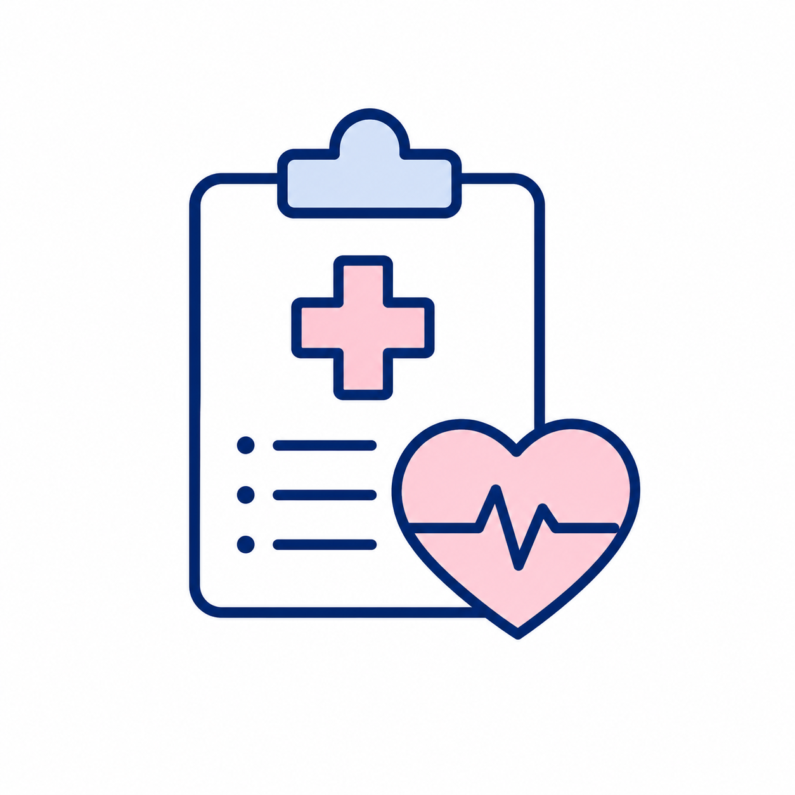

Need Help Getting Interviews?
Get a clean, ATS-friendly resume for remote jobs.
▽
Select Filter:
Get More Remote Job Tips!
Join our email list for weekly job leads, resume tips, and WFH advice.
Remote Job Tips From the Blog 🤍
Quick reads to help you apply smarter, clean up your resume, and avoid scams.
Resume Help
How to make your resume look remote-job ready
Simple changes that help your resume look cleaner, easier to scan, and more ATS-friendly.
Read more → Beginner FriendlyBest remote jobs to search for when you’re starting out
Customer support, chat support, data entry, healthcare support, and other realistic entry points.
Read more → Scam CheckRed flags to watch for before applying
What to double-check before sharing personal information or moving forward with a remote job lead.
Read more →